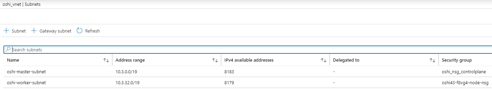

OPENSHIFT AZURE INSTALL and CUSTOMIZE
POPIS INSTALACE OPENSHIFT 4.x stable build v prostředí Azure
Popis instalace OpenShift ve verzi 4.x jako publish Internal tedy s definicí endpointů do private zóny.
Private DNS zone
Při instalaci je potřeba nakonfigurovat automaticky vytvořenou private DNS zone tak že k ní budou přilinkovány Azure Vnet.
Privatni DNS zona se nechova jako klasicky DNS server, nemá IP adresy na které by se dala
forwardnout z jinych DNS serveru.
Zaznamy z ní muzou resolvnout pouze VM umisteny v Azure Vnet, která je přilinkovaná k
private DNS zóně a to pouze za předpokladu že pro resolvování záznamu v těchto zónách
používají Azure DNS server (168.63.129.16)
V Azure je pro přilinkování vytvořena policy která by měla během cca 10 minut provést přilinkování potřebných vnet k vytvořené private DNS zóně. fig: privateDNS virtual-network-links
Konfigurace by pak měla vypadat následovně:
Příprava Azure účtu a service principals
az login
az account show
#define service principals
az ad sp create-for-rbac --name service_principal_name
#add roles
az role assignment create --assignee "app id of service principal" --role Contributor --output none
az role assignment create --assignee "app id of service principal" --role "User Access Administrator" --output none
# service principal needs read write owned by app permisions azure AD graph
az ad app permission add --id "app id of service principal" \
-- api 00000002-0000-0000-c000-000000000000 \
-- api-permissions 824c81eb0e3f8-4ee6-8f6d-de7f50d565b7-Role
#subscription id
az account list --output table
#tenant id --> when create service principals
#service principal client id -->app id when created service principal
# service principal client secret -->output of service principal
Redhat pull secret
Redhat pull secret získáme z (redhat-pull-secret)
Konfigurační soubory Azure
Pro service principals vytvoříme soubor ~/.azure/osServicePrincipal.json s obsahem dle vytvořeného service principal s následující strukturou:
touch ~/.azure/osServicePrincipal.json
{"subscriptionId":"7504de90-f639-4328-a5b6-fde85e0a7fd9","clientId":"126501b0-ae03-4aad-aff2-19ced106b169","clientSecret":"********","tenantId":"d2480fab-7029-4378-9e54-3b7a474eb327"}
Pro různé instalace do stejné subskripce můžeme využít stejné service principals.
Adresář ~/.azure pak bude vypadat následovně:
.azure/
├── accessTokens.json
├── azureProfile.json
└── osServicePrincipal.json
4. SSH klíče
Vytvoříme ssh klíče pro přístup na jednotlivé nody OCP.
ssh-keygen -f $HOME/.ssh/id_dsa -t dsa -b 1024
chmod 700 ~/.ssh
5. Instalace přez proxy server
Pokud je omezena přímá komunikace typu outbound, můžeme použít instalaci přez PROXY server jako:
export https_proxy="https://adresa:port"
export http_proxy="http://adresa:port"
při instalaci přez PROXY se následně proxy nadefinuje jako “cluster-wide” a resource proxy na OCP bude vypadat jako:
apiVersion: config.openshift.io/v1
kind: Proxy
metadata:
generation: 2
name: cluster
spec:
httpProxy: http://adresa:port
httpsProxy: https://adresa:port
noProxy:
trustedCA:
name: ""
status:
httpProxy: http://adresa:port
httpsProxy: https://adresa:port
noProxy: .cluster.local,.svc,10.0.0.0/16,10.128.0.0/14,127.0.0.1,169.254.169.254,172.30.0.0/16,api-int.{cluster.dns.zone},
etcd-0.{cluster.dns.zone},etcd-1.{cluster.dns.zone},etcd-2.{cluster.dns.zone},localhost
Jako noProxy, tedy whitelisting by bylo vhodné uvést důvěryhodné zdroje které OCP vyžaduje ke svému běhu.
| ADRESS | DESCRIPTION |
|---|---|
| registry.redhat.io | Provides core container images |
| *.quay.io | Provides core container images |
| sso.redhat.com | The https://cloud.redhat.com/openshift site uses authentication from |
| cert-api.access.redhat.com | Required for Telemetry |
| api.access.redhat.com | Required for Telemetry |
| infogw.api.openshift.com | Required for Telemetry |
| management.azure.com | Azure services and resources |
| mirror.openshift.com | Required to access mirrored installation content and images |
| *.cloudfront.net | Required by the Quay CDN to deliver the Quay.io images that the cluster requires |
| *.apps.<cluster_name>.<base_domain> | Required to access the default cluster routes unless you set an ingress wildcard during installation |
| api.openshift.com | Required to check if updates are available for the cluster |
| cloud.redhat.com/openshift | Required for your cluster token |
6. Instalační balíky
Stáhneme a rozbalíme openshift-client, openshift-install.
- (stable installer)
- (dev preview installer) Při instalaci dev preview nebudou fungovat upgrady na vyšší verze.
7. Automatická Instalace OCP
Openshift provede provisioning všech potřebných objektů(včetně vnet) v Azure automaticky. Vypublikuje public Endpointy pro routy a podobně.
openshift-install create install-config --dir ./install_dir --log-level debug
# případně upravíme ~/install_dir/install-config.yaml
# příklad install-config.yaml
apiVersion: v1
baseDomain: csas.elostech.cz
compute:
- hyperthreading: Enabled
name: worker
platform: {}
replicas: 3
controlPlane:
hyperthreading: Enabled
name: master
platform: {}
replicas: 3
metadata:
creationTimestamp: null
name: poshi4
networking:
clusterNetwork:
- cidr: 10.128.0.0/14
hostPrefix: 23
machineCIDR: 10.2.0.0/16
networkType: OpenShiftSDN
serviceNetwork:
- 172.30.0.0/16
platform:
azure:
baseDomainResourceGroupName: ocp42-shared
region: westeurope
publish: External
openshift-install create cluster --dir ./install_dir --log-level debug
# openshift vytvoří svojí resource group v subskripci
INFO Waiting up to 30m0s for the cluster at https://api.DNS:6443 to initialize...
INFO Waiting up to 10m0s for the openshift-console route to be created...
INFO Install complete!
8. Custom Private Instalace OCP
The following items are not required or created when you install a private cluster:
- A BaseDomainResourceGroup, since the cluster does not create public records
- Public IP addresses
- Public DNS records
- Public endpoints
custom properties
azure custom properties
Create Azure Vnet and Install with existing VNET
Je potřeba vytvořit Azure Vnet s dvěmi subnety (jednu pro master nody a jednu pro worker nody).

Zárověn je potřeba vytvořit dvě NSG(network security group) a přiřadit příslušným subnet. Hlavní důvod je ssh přístup na bootstrap VM, z kterého instalátor pracuje.
Pozn: Při instalaci se NSG vytvoří automaticky v resource_group OCP objektů jen se nepřiřadí Subnetu, lze tedy použít i tu. Pokud se tak rozhodnete je potřeba to provést v průběhu instalace (provisioning objektů v Azure se dělá jako první).
Minimální nutné nastavení NSG odpovídá:
Master nodes NSG

Worker nodes NSG

yaml defince vnet(v samostatné RG)resouce_group:
# install-config.yaml snippet
poshi_vnet_rg
vnet:
poshi_vnet 10.2.0.0/16
subnet:
poshi-worker-subnet 10.2.32.0/19
poshi-master-subnet 10.2.0.0/19
Použití lokální container repository
Počítá se s instalací použítím lokální container repository (Artifactory = artifactory.apps.poshi4.csas.elostech.cz) s nakonfigurovanou remote repository “quay.io/openshift-release-dev/ocp-release” a “quay.io/openshift-release-dev/ocp-v4.0-art-dev”. Instalaci pak upravíme jako:
# install-config.yaml snippet
# nakonfigurane remote repository na artifactory
imageContentSources:
- mirrors:
- artifactory.apps.poshi4.csas.elostech.cz/docker-quay/openshift-release-dev/ocp-release
source: quay.io/openshift-release-dev/ocp-release
- mirrors:
- artifactory.apps.poshi4.csas.elostech.cz/docker-quay/openshift-release-dev/ocp-v4.0-art-dev
source: quay.io/openshift-release-dev/ocp-v4.0-art-dev
Pull secret pro artifactory je potřeba přidat do install-config.yaml .pullSecret Dá se provést například tak že si z Redhatu stáhnu pull secret a obohatím ho pull secret pro Artifactory.
echo -n 'usernametoartifactory:password'|base64 -w0
# download pull secret from Redhat to pull-secret.json
cat pull-secret.json |jq '.auths += {"artifactory.apps.poshi4.csas.elostech.cz": \
{"auth": "dXNlcjpxeFloSmcyczQxckpGQXVISk5pMg==","email": "myemail"}}'>pull-secret2.json
# add content of pull-secret2.json to install-config as element .pullSecret
Následné upgrade OCP clusteru se také budou provádět přez tuto repository. Na OCP clusteru se vytvoří objekt typu ImageContentSourcePolicy.
apiVersion: operator.openshift.io/v1alpha1
kind: ImageContentSourcePolicy
metadata:
name: proxy
spec:
repositoryDigestMirrors:
- mirrors:
- artifactory.apps.poshi4.csas.elostech.cz/docker-quay/openshift-release-dev/ocp-release
source: quay.io/openshift-release-dev/ocp-release
- mirrors:
- artifactory.apps.poshi4.csas.elostech.cz/docker-quay/openshift-release-dev/ocp-v4.0-art-dev
source: quay.io/openshift-release-dev/ocp-v4.0-art-dev
Instalace
openshift-install create install-config --dir ./install_dir --log-level debug
následně upravíme vygenerovaný ~/install_dir/install-config.yaml
# install-config.yaml
apiVersion: v1
baseDomain: csas.elostech.cz
compute:
- hyperthreading: Enabled
name: worker
platform:
azure:
type: Standard_D2S_v3
replicas: 3
controlPlane:
hyperthreading: Enabled
name: master
platform:
azure:
type: Standard_D2S_v3
replicas: 3
metadata:
creationTimestamp: null
name: privoshi4
networking:
clusterNetwork:
- cidr: 10.128.0.0/14
hostPrefix: 23
machineCIDR: 10.6.0.0/16
networkType: OpenShiftSDN
serviceNetwork:
- 172.30.0.0/16
platform:
azure:
region: westeurope
networkResourceGroupName: privoshi_vnet_rg
virtualNetwork: privoshi_vnet
controlPlaneSubnet: privoshi-master-subnet
computeSubnet: privoshi-worker-subnet
publish: Internal
imageContentSources:
- mirrors:
- artifactory.apps.poshi4.csas.elostech.cz/docker-quay/openshift-release-dev/ocp-release
source: quay.io/openshift-release-dev/ocp-release
- mirrors:
- artifactory.apps.poshi4.csas.elostech.cz/docker-quay/openshift-release-dev/ocp-v4.0-art-dev
source: quay.io/openshift-release-dev/ocp-v4.0-art-dev
sshKey: |
ssh-rsa AAAAB3NzaC1yc2EAAAADAQABAAAAgQDiLcwh8VT57cIPCLJf5DMDkrPyHHJs
l3Cvluw5AFPs5hs0MmbNKSs5XQjtZdQfMcBtdxkQ== user@machine
pullSecret: pull secret jsou vygenerovany automaticky + upravime pripadne dalsi jako pro artifactory ...
Spuštění instalace:
# install
openshift-install create cluster --dir ./install_dir --log-level debug
# openshift vytvoří svojí resource group v subskripci
INFO Waiting up to 30m0s for the cluster at https://api.DNS:6443 to initialize...
INFO Waiting up to 10m0s for the openshift-console route to be created...
INFO Install complete!
9. Postinstalační testy
export KUBECONFIG=$(pwd)/install_dir/auth/kubeconfig
oc login --username=kubeadmin --password='password'
oc get clusterversion
oc get nodes
oc get clusteroperators
# konfigurace a její uložení na FS, tento krok není nutný
oc adm must-gather
10. Uninstall proces
openshift-install destroy cluster --dir ./install_dir --log-level debug
Provision části které vytvořil OCP při instalaci budou smazány (týká se to jeho vlastní RG v Azure)
11. Problémy při instalaci
Častý problém je že není možné se připojit na bootstrap VM přez port 22, potřeba nadefinovat v NSG.
#konkretni problemy
openshift-install gather bootstrap --bootstrap 51.124.79.94 --master 51.124.94.42
openshift-install gather bootstrap